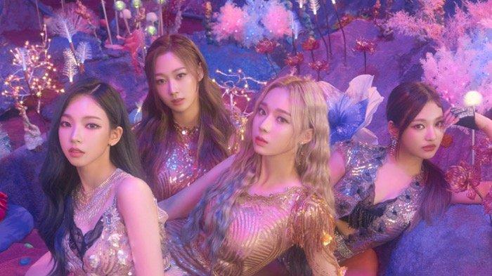

Aeri Uchinaga (Giselle)
Main rapper from Kpop girl group, aespa
Hello, I'm Giselle from aespa. I'm 22 years old and I like carbonara. Giselle is the third member of the SM Entertainment idol group to come from Japan. She is also the first girl Japanese idol to debut at SM Entertainment.
This my instagram!!

Giselle menjadi trainee tercepat dengan masa latihan 10 bulan dan menjadi satu satunya yang lolos Saturday Auditions yang diselenggarakan dan dihadiri oleh produser SM Entertainment secara langsung. Saturday Auditions ini terkenal dengan tingkat kesulitan yang tertinggi pada audisi artis SM Entertainment untuk lolos dan diterima menjadi trainee. Hal ini dibuktikan dengan kemampuannya dalam menyanyi dan rap serta menari.
Selain itu, ia juga pernah kolaborasi bersama Taeyong, Hendery, Jeno dan Yangyang dari NCT dengan lagu ZOO dalam konser "SMTOWN LIVE 2022: SMCU EXPRESS@KWANGYA" yang diselenggarakan secara online.
ia menjadi member keempat yang dipertkenalkan oleh SM Entertaiment pada tanggal 28 Oktober 2020. Bersama 3 anggota lainnya, Giselle memulai debutnya dengan Black Mamba.